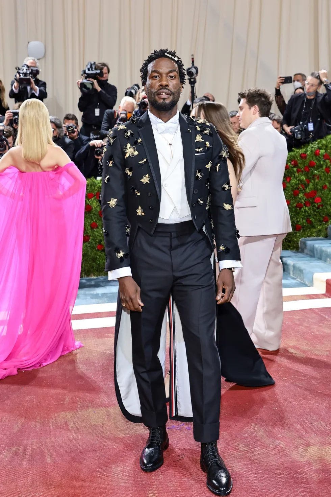

Tema-tema Met Gala merupakan satu kesatuan yang terus berlanjut, misalnya pada tahun ini, tema yang diangkat ialah “Gilded Glamour” yang dimana merupakan lanjutan dari tema Met Gala tahun 2021 yang berjudul “A Lexicon of Fashion”. Pada tahun ini, tema Gilded Glamour menonjolkan tema fashion di era 1870 hingga 1900. Adapun pada Met Gala tahun lalu, menuai banyak sekali kontraversi-kontraversi. Misalnya busana serba hitam Kim Kardashian karya Demna Gvasalia yang benar-benar hitam dari atas kepala hingga bawah. Tak kalah saing, Erykah Badu juga menggunakan gaun serba hitam seperti Kim Kardashian. Penampilan Badu disebut semakin fantastis karena topeng bola rancangan Thom Browne yang dikenakannya. kemudian ada juga busana “kuda” milik Kim Petra, gaun yang didesign oleh Collina Strada sangatlah unik, sebab terdapat ornament 3D yang berbentuk kepala kuda di bagian dada gaun tersebut.
Tema Met Gala 2022
Acara penggalangan dana untuk Costume Institute Metropolitan Museum of Art di New York.
